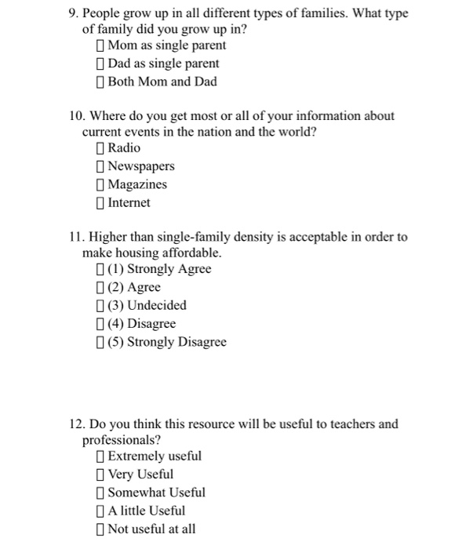
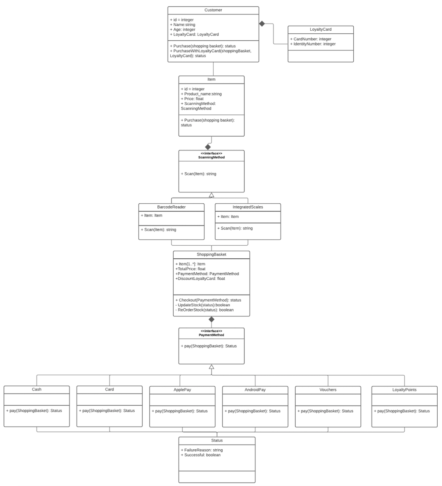

Features
Codes of Ethics and Professional Conduct
Review the application of the ethics code to the situation described and highlight the impact on any relevant legal (jurisdictional or non-jurisdictional) and social issues, as well as on the professionalism of the computing professionals involved. You should provide comparisons to the British Computer Society (BCS) Code of Conduct.
“Corazon is a medical technology startup that builds an implantable heart and health monitoring device” (ACM Ethics, 2018). The device functions so that you are able to monitor and record heart functions using a mobile app that is accessible by the patient and medical professionals. Corazon gained popularity and even begun offering their services for free to those who could not afford it.
Corazon implemented security mechanisms to ensure privacy, where all data on the app was encrypted. Nevertheless, a researcher found a vulnerability in the wireless connection between the device and mobile app. The researcher claims that is susceptible to data manipulation if another device is in close proximity. Unethically, the leaders of Corazon did not address the issue and wrote it off as negligible.
learn more
The BCS Code of Conduct ensures that IT professionals adhere to rules and regulations that are in the best interest of the public. According the BCS, you should “respect and value alternative viewpoints and seek, accept and offer honest criticisms to work” (BCS, 2023). Taking this into account, Corazon did not act in the best interest of their clients, and put their health at risk by claiming to possess the necessary security measures to secure patient data.
References
BCS The Chartered Institure for IT. 2021 The Code of Conduct.
ACM (n.d.) Code of Ethics: Case studies.
Case Study: Accuracy of information
Abi is a researcher at an institute and also a statistical programmer. Abi has received a project from a manufacturer to review the nutritional value of a new cereal, Whizzz. Having collected the necessary data, he now needs to perform the appropriate analyses and print the reports for him to send to the manufacturer. Unfortunately, the data Abi has collected seems to refute the claim that Whizzz is nutritious, and, in fact, they may indicate that Whizzz is harmful. Abi also realises that some other correlations could be performed that would cast Whizzz in a more favourable light. “After all,” he thinks, “I can use statistics to support either side of any issue. Highlight legal, social and professional impacts of any choices made.
learn more
▲
Ethics in Computing
Consider yourself as a relevant stakeholder, a Computing professional working for a company of your choice. Examine how one or more of the ethical issues mentioned affect your role in the company and what actions you would need to/can take.
Ethics in computing play a vital role. This is because ethics in computing helps companies adhere to the rules of law, whilst taking into account social, ethical or cultural issues. Computing professionals are obliged to protect their employees and clients, by making sure they have the necessary measures in place to protect any individuals privacy and overall well being. Technologies are constantly advancing and therefore they need to be monitored continuously in order to avoid potential risks. It is therefore essential that relevant stakeholders act professionally and with integrity. Taking this into account, stakeholders are able to provide sound advice whilst acting in the best interest of the public.
learn more
Law is understood as “a set of rules that can be enforced in a court” (Bott, 2018). Although different countries have different laws, there are certain standards and ethical considerations that can be appleid no matter your geographical location. For instance, when we refer to law in the computing industry, we focus on an individuals right to privacy and the protection of their data.
Facebook, is a technology company that is used globally. Facebook has faced numerous ethical issues. For instance, in 2018 during Trump’s Campaign, millions of Facebook users data was accessed and used unethically. The data was used to build voter profiles. “The Times reported that in 2014 contractors and employees of Cambridge Analytica, eager to sell psychological profiles of American voters to political campaigns, acquired the private Facebook data of tens of millions of users — the largest known leak in Facebook history” (Confessore, 2018). This was unethical as Facebook had not gotten their users consent.
Thus, stakeholders at a company like Facebook should be committed to act morally when dealing with data. Going forward, Facebook stakeholders need to ensure that their privacy practices are made transparent. Altogether, companies need to ensure that stakeholders have a clear understanding about the social and ethical consequences of using certain technologies. This can be implemented by sending computing professionals on compulsory training programs to further their understanding and awareness. Along with, conducting regulatory security checks to make sure there are no data breaches. In conclusion, it is evident that the importance of ethics in computing is essential in modern society as technology is embedded in our every day lives, where people’s private data is constantly at risk of being exposed and used unethically.
References
Bott, F. (2014) Professional Issues in Information Technology. London:BCS.
Confessore, N. (2018) Cambridge Analytica and Facebook: The scandal and the fallout so far, The
New York Times. The New York Times. Available at: https://www.nytimes.com/2018/04/04/us/
politics/cambridge-analytica-scandal-fallout.html (Accessed: February 11, 2023).
Stahl, B., Timmermans, J. & Mittelstadt, B. (2016) The Ethics of Computing. ACM Computing Surveys 48(4):1-38. DOI: 10.1145/2871196
Literature review outline
Implementing Machine Learning tools and/or techniques in: suspect profiling
Suspect profiling is understood as the practice of identifying alleged preparators associated with criminal activity. Criminal profilers rely on numerous techniques to pinpoint offenders. For instance, law enforcement recognise machine learning tools and extensive data analysis as a “reliable standard of evidence-based profiling” (UCF online, 2022). Overall, machine learning tools help detect patterns and behaviours of suspected individuals through data collection (Wired, 2018).
The pros and cons of machine learning in suspect profiling
learn more
There is a enormous amount of criminal records, which when sifted through manually to identify repeat offenders, takes up a mass amount of time. Machine learning tools are an effective way and less time consuming way to process data to generate predictions, whilst avoid human manual errors (Munasinghe and Perara, 2015). On top of this, machine learning tools can be used advantageously for crimes that are under investigation, by using algorithms and applying them to datasets to create a profile based on gender, race, age, education and so on. The following machine learning tools, “Logistic Regression, Support Vector Machines, Neural Networks, Bayesian Networks and several Classifier Ensembles” will be investigated in this paper (Mariani, 2020).
Machine learning techniques are also subject to error based on missing data, which can result in unreliable predictions. Unfortunately, data can also be weaponised against minority groups. For instance, previous unjust arrests can result in discriminatorily monitoring, gaining control over individuals and/or social groups. Thus, biased data fosters human prejudice. Additionally, there is a lack of transparency involving certain predictive tools, people question its role in the criminal justice system (Heaven, 2020).
Research Methods
In this paper, I will make use of the following academic quantitative research methods:
Descriptive research
Correlational research
Causal-comparative/quasiexperimental research
Experimental research
Additionally, I will conduct qualitative research by conducting an interview. I will be interviewing the owner of an AI firm based in Johannesburg, South Africa to get his insight into machine learning and suspect profiling.
Hypothesis
Automated computer-assisted technology can benefit and assist data management when profiling a suspected individual. Ultimately, AI tools have potential to explain complex crimes associated with a suspect.
References
Heaven, W.D. (2020) Predictive policing algorithms are racist. they need to be dismantled., MIT Technology Review. MIT Technology Review. Available at: https://www.technologyreview.com/2020/07/17/1005396/predictive-policing-algorithms-racist-dismantled-machine-learning-bias-criminal-justice/ (Accessed:February 19, 2023).
J. ICOVE, D. (no date) Automated crime profiling . Available at:https://web.eecs.utk.edu/~icove/CrimeProfiling.pdf (Accessed: February 19, 2023).
M. Mariani , S. (2020) Profiling serial killers using multiple supervised machine learning. Available at: https://studenttheses.uu.nl/bitstream/handle/20.500.12932/37006/eindscriptie_SimonMariani.pdf?sequence=1 (Accessed: February 20, 2023).
Rudin, C. and Sloan, M.I.T. (2015) Predictive policing: Using machine learning to detect patterns of crime, Wired. Conde Nast. Available at: https://www.wired.com/insights/2013/08/predictive-policing-using-machine-learning-to-detect-patterns-of-crime/ (Accessed: February 20, 2023).
What is criminal profiling and it's role in law enforcement? (2022) UCF Online. Available at: https://www.ucf.edu/online/criminal-justice/news/what-is-criminal-profiling and-what-is-its-role-in-law-enforcement/ (Accessed: February 19, 2023).
Seminar 3 Case Study
Ricardo works for the records department of his local government as a computer records clerk, where he has access to files of property tax records. For a scientific study, a researcher, Beth, has been granted access to the numerical portion “but not the corresponding names” of some records. Beth finds some information that she would like to use, but she needs the names and addresses corresponding with certain properties. Beth asks Ricardo to retrieve these names and addresses, so she can contact these people for more information and for permission to do further study. Now consider, what are the ethical issues involved in deciding which of these options to pursue?
learn more
If Ricardo is not responsible for determining allowable access, should he release the names and addresses?
No, Ricardo should not be able to release the names and addresses as he does not have sign off from his suepriors or the authority to do so. Ricardo will be required to adhere to his companies policies. I would suggest that Ricardo logs a request to gain access to the above mentioned data, and gain consent before proceeding. Additionally, it should be reviewed as to why Beth needs access to this information and whether or not it holds relevance and will be valuable towards her research.
Suppose Ricardo were responsible for determining allowable access to the files. What ethical issues would be involved in his deciding whether to grant access to Beth?
Ricardo would need to ensure that Beth uses the data in an ethical manner and gains consent from the indiivduals to participate in the study. She would then need to make sure that the information granted to her is secure and safe and cannot be accessed or used for anything beyond the scientific study. Furthermore, she would need to provide evidence of their consent, such as a verbal recording or have it in writing.
Should Beth be allowed to contact the individuals involved? That is, should the Records department release individuals' names to a researcher? What are the ethical issues for the Records department to consider?
I suggest that Richardo contact the individuals first to provide their consent before Beth, who does not work for the records department. If the individuals contacted provide their consent, then Beth should be allowed to contact them.
Suppose Beth contacts the individuals to ask their permission, and one-third of them respond giving permission, one-third respond denying permission, and one-third do not respond. Beth claims that at least one-half of the individuals are needed to make a valid study. What options are available to Beth?
Beth will not be able to continue with her research, as she has not obtained consent from at least half of the individuals. It is important that the records company adheres to the rules of law, where data cannot be obtained by a third party without the consent of individuals. Otherwise, this will be viewed as a data leak. Additionally, all data should be destroyed or masked when the research study is complete. Overall, all data needs to be dealt with an ethical manner.
Reflective activity
In 2018, Cambridge Analytica was in the news in the United Kingdom and the USA (Confessore, 2018) for obtaining and sharing data obtained from millions of Facebook users. They obtained the data through innocuous surveys on Facebook (you may have seen this type of survey and probably participated at times). This is probably the highest profile of surveys used for alternative means and, probably, monetary gains. However, this happens often through various media. Consider how exactly this happened and why it was used. Find one or two further examples of inappropriate use of surveys and highlight the impact of all these examples from the various ethical, social, legal and professional standpoints that apply.
learn more
Surveys are viewed as an effective tool for gathering data and gaining insight. Nevertheless, people’s data should also be dealt with in an ethical way where certain rules and regulations should be implemented. Additionally, it is essential that certain security measures are put in place to ensure that personal data is kept confidential and only accessible by authorised parties.
"The Times reported that in 2014 contractors and employees of Cambridge Analytica, eager to sell psychological profiles of American voters to political campaigns, acquired the private Facebook data of tens of millions of users — the largest known leak in Facebook history" (Confessore, 2018). This was done by collecting an individual’s personal data by getting individuals to fill out a survey. People did so and were under the illusion that this was a personality test and was not to identify them as targets for political gain. This is an example of the unethical use of technology to gain data with malicious intent.
New Statesmen Media Group, sent out a survey to “senior marketers, business leaders and publishers” has been identified as an unethical use of research methods (Drayton and Mel, 2022). These surveys required respondents to choose between alternative campaign tactics. The company also collaborated with influencers to gain attention from their followers. They then deployed tactics such as greenwashing, where they would falsely brand their company as environmentally friendly because they found that is what consumers wanted based on survey feedback.
When conducting a survey for research purposes, certain security measures need to be adopted, such as encrypting data collected and only giving access to authorised parties. This can be implemented by complying and adhering to the General Data Protection Regulation (GDPR). If they fail to do so, they will be held accountable in the eyes of the law and will be prosecuted accordingly.
Overall, it is vital that individuals are aware of the personal information they are willing to expose online. A company needs to be transparent about how they plan on obtaining and individuals data and what exactly it will be used for. All the above, should be highlighted and explained clearly in the companies terms and conditions.
References
Confessore, N. (2018) Cambridge Analytica and Facebook: The scandal and the fallout so far, The New York Times. The New York Times. Available at: https://www.nytimes.com/2018/04/04/us/politics/cambridge-analytica-scandal-fallout.html (Accessed: February 11, 2023).
Phillip, Drayton and Mel (2022) Worst examples of unethical marketing revealed in new survey, Global Marketing Alliance. Available at: https://www.the-gma.com/worst-examples-of-unethical-marketing-revealed-in-new-survey (Accessed: March 16, 2023).
Wiki Activity: Questionnaires
Find a questionnaire and critique the design, both the format and the questions used. Consider areas such as ‘why is this question included?’, ‘is the form of the question appropriate?’ etc. How can you improve the questionnaire?
learn more

Based on the analysis of the above questionnaire. The following issues have been identified:
A leading question is identified where a question is asked about where you source most or all your information. The answers only include that of public sources and provide limited options. For instance, it excludes things such as books or by word of mouth. It is evident that the researcher has a preferred response.
An assumptive question has been identified. The researcher is immediately assuming that the child grew up with parents. Additionally, that the parents are either a man or a women.
Am ambiguous question is identified, where the researcher uses the term “single- family density,” which is a real estate term. Thus, the language used in this question will not be understood by all respondents resulting in confusion and inaccurate answers.
The last question is pushy, by using the word “useful” in every answer. The question is also ambiguous as it refers to teachers and other professionals. The respondent cannot accurately respond to this question without understanding what other professionals the researcher is referring to.
Finally, the layout of the questionnaire is also confusing, where the spacing is different in between questions and there is numbering for one question and not others.
Mid-Module Assignment: System Design
Rationale
Unified Modeling Language (UML) aids in the maintenance of software, by visually representing the way in which the software will behave (Alsarraj, Altaie, Fadhil, 2021). UML visually displays the separation of components and their relationship to one another. Moreover, UML allows you to easily extract the necessary information during the debugging process and the maintenance of software. Overall, “UML is considered as one of the standard modelling notations that is utilized for representing software as graphical notations. (Alsarraj, Altaie, Fadhil, 2021).
learn more
UML has been advantageous amongst software developers, as it increases understanding and communication between team members. Additionally, UML can create a notation framework for incorporating both elements of design and software engineering. This is because UML allows you to understand interactions and analyse software usability in a graphical manner (Kovacevic, 1999). Technological trends in popular culture are seen as both advantageous and destructive. Evidently, technologies role in the health system, specifically AI, is paramount. Although, artificial intelligence supports humankind, many people remain sceptical of long term ramifications. Further investigation is needed to understand user satisfaction regarding the success of technologies, such as exoskeletons. Questions need to be raised pertaining to a user’s quality of life and whether the benefits out way any adverse effects. (Platz, 2016) Thus, human-robot interaction raises social concerns, particularly that of safety, trust and overall well-being.
A Software System Design for a Self-Service Checkouts
The following design is based on Unified Modeling Language (UML) principles. UML “helps you specify, visualize, and document models of software systems, including their structure and design” to meet certain criteria (UML, 2005). The following design makes use of UML to define and display the way in which the system will function and work based on classes and their relationships.
Self-Service system classes
The customer The customer is the primary class. The customer class has the following attributes: name, age and whether or not they have a loyalty card. The customer’s purpose is to execute the following operation (method); to purchase an item in the store. Loyalty card The loyalty card class has a strong association with the customer class. This is because the loyalty card class’s existence is dependent on the customer class. The loyalty card has the following attributes: an identity number (to make sure it associated with the correct customer) and a card number (identifies the card details). Item This class identifies the items available for purchase. The item has the following attributes: product name, a price and scanning method allowing you to buy the product. The item needs to be added to the shopping basket and return a status. Scanning method (interface) The scanning method is an interface that cannot exist without the Item class. This is because you need an item in order to scan it and add it to the virtual shopping basket. Barcode reader The barcode reader class operation is to scan a barcode to identify an item. This class inherits the attributes from the scanning method. This is known as a generalization relationship. Integrated scales The integrated class operation is to weigh an item and price it accordingly. This class inherits the attributes from the scanning method. This is also an example of a generalization relationship. Shopping basket The shopping basket class takes in an item, where an infinite number of items can be added to the virtual shopping cart. Payment method (interface) The payment method interface allows you select a type of payment when choosing to pay for your items in the shopping cart, whilst considering if you have a loyalty card or not. If you have a loyalty card, you may receive a deduction. Cash, Card, ApplePay, AndroidPay, Vouchers, Loyalty Points The different payment method classes allow you to purchase the items in your shopping cart and return a status based on stock availability. The stock availability is not public and can only be viewed by a staff member. These classes inherit the attributes from the base class (payment method). Status The status class determines whether the purchase was successful or unsuccessful. If the purchase is unsuccessful due to an individual’s age or scanning error, it will return a failure reason. Alternatively, the purchase is successful and returns a Boolean to determine whether there is stock is still available in the store (true) or it needs to be reordered (untrue).

References
1. Alsarraj, Altaie, Fadhil, R.A.A (2021). ‘Designing and implementing a tool to transform source code to UML diagrams’ Periodicals of Engineering and Natural Sciences. March 2021. University of Mosul Iraq. DOI: http://dx.doi.org/10.21533/pen.v9i2.1829 [Accessed 14 January 2022]. 2. Downey, A. (2015) Think Python: How to Think Like a Computer Scientist. 2nd ed.Needham, Massachusetts: Green Tea Press. Available from: https://greenteapress.com/thinkpython2/thinkpython2.pdf [Accessed 14 January 2022]. 3. Kovacevic S. (1999) UML and User Interface Modeling. In: Bézivin J., Muller PA. (eds) The Unified Modeling Language. «UML»’98: Beyond the Notation. UML 1998. Lecture Notes in Computer Science, vol 1618. Springer, Berlin, Heidelberg. https://doi.org/10.1007/978-3-540-48480-6_20 4. Unified Modeling Language. (2005) What is UML. Available at: https://www.uml.org/what-is-uml.htm [Accessed 14 January 2022].
▲
System Implementation
Assignment Brief
learn more
An algorithmic solution for a class diagram using python
System Implemetation
1. Create a class for patient and assign it the relevant attributes. The patient is required to complete the following operations; request a repeat prescription and make an appointment with the doctor.
2. Create a healthcare proffessional class. The healthcare proffessional class is made up of two sub classes: doctor and nurse, where all healthcare proffessionals need an employee number and a name.
3. Create a prescription class, where you need the following attributes to create a script for a patient: type of drug, patient, doctor, quantity and a dosage.
4. Create a class for the receptionist. The receptionist is required to make an appointment for a patient, issue them a prescription on request and have the ability to cancel an appointment. The receptionist is identified by their name and employee number.
5. Create a method for making an appointment and attaching it to the appointment schedule.
6. Create a method for requesting a prescription.
7. Create a method for deleting an appointment from the appointment schedule.
Run your code
You can copy and run this code in any source code editor, as long as you save it as a python file.
Debug your code
You are able to debug your code and run it in the terminal in order to test for errors.
Results
I made use of Jupyter Notebook to run and view code outputs.

References
Phillips, D. (2018) Python 3 Object-Oriented-Programming. Third Edition. Birmingham: Packt Publishing ltd. Available via the Vitalsource Bookshelf. [12 February 2022]
▲Module Reflection
Assignment Brief
I understand Object-Orientated Programming in computing as the organization of data into objects that have unique attributes and behaviors. We can use Object-Orientated programming to understand, manipulate, process and store data in a readable manner. I learnt from the beginning of the module that data can turn into information, which then becomes knowledge. This is done by assigning data meaning when processing it. Overall, “we can say information is data plus meaning.” (Essex Online, 2021).
Data holds value and is prevalent in modern society. We used data based systems in our day to day lives, such as online shopping applications. Seeing that information systems are so widely used, they have a moral responsibility to ensure they function correctly. For instance, an information system was used to keep record of United States prisoners, involving their sentence and behaviour. The system was relied on to see whether or not a prisoner’s documented good behaviour could lead to a reduction in their sentence. Since 2002, the system had been faulting and this went undetected for 13 years. The system was malfunctioning and allowing prisoners to be released earlier than they should have been. This highlights the importance of a well-planned information system to ensure correct functionality.
1. Baseline (2003) Hospital Revives its Dead Patients. Available from: https://www.baselinemag.com/c/a/Projects-
2. Networks-and-Storage/Hospital-Revives-Its-QTEDeadQTE-Patients [Accessed: 14 November 2021]
BBC (2015) US Prisoners Released Early by Software Bug. Available from: https://www.bbc.co.uk/news/technology- [Accessed: 14 November 2021]
3. Shelly, B., Cashman, T. & Rosenblatt, H.(2006) Systems Analysis and Design: Sixth Edition. Chapter 1. Thomson Course Technology Course.
4. Sommerville I. (2015) Software Engineering. 10th. ed. Essex: Pearson.
learn more
The fundamentals of Object- Orientated Programming are the ability to define a class, assign attributes to a class, along with operations. Attributes can be broken up into different data types, for instance integers or a string. An operation is made up of parameters. There are also different forms of association between classes. There is generalization, where one class inherits the attributes of a parent class. Composition indicates a strong relationship between classes, where a class is dependent on the existence of another class. Aggregation is when two classes do not rely on the existence of another, and instead can exist completely independently.
I found the mid-module assignment to be a great way to visually understand the relationships between classes. I felt that providing a visual solution to self-service checkout systems for customers was an informative way to learn about objects and how they interact with one another. Overall, I felt that Unified Modelling Language (UML) allows you to easily identify an error and improves the debugging process and maintenance of the information system.
I found the next assignment, where we required to implement an object-orientated system more difficult. This is because I found it hard to translate a visual diagram into readable python code. I feel that I have a moderate understanding of python conventions. However, I believe I could improve on my skills by doing further testing and catering for different cases where applicable. My feedback also highlighted, that it would be advantageous to break up my solution into different source files. This is something I will work on implementing in the future.
We revisited SQL in this module. I really enjoy SQL and feel it something I understand well when it comes to communicating, storing and manipulating data in a table format. We were then introduced to web development. Web development is something I am familiar with and have engaged with in my work environment. I am familiar with basic web development and am proficient in HTML, CSS and JavaScript. I found the introduction to Flask as a micro web framework to be useful. I learnt that the route is seen as a controller in Flask, where it will direct us to a particular space to perform certain functions. Flask allows you to create a server where a web application exists and is created using python code.
Overall, I found the module intellectually stimulating and at times challenging. I believe I was able to explore many aspects of Object-Orientated Programming and found the material was well scripted. I feel the assignments are crucial, and where I gain most of my knowledge, as I am required to understand and apply what I have learnt. Nevertheless, I felt I could have managed my time better and would have benefitted from engaging more with my peers. I look forward to continuously learning and improving.
References